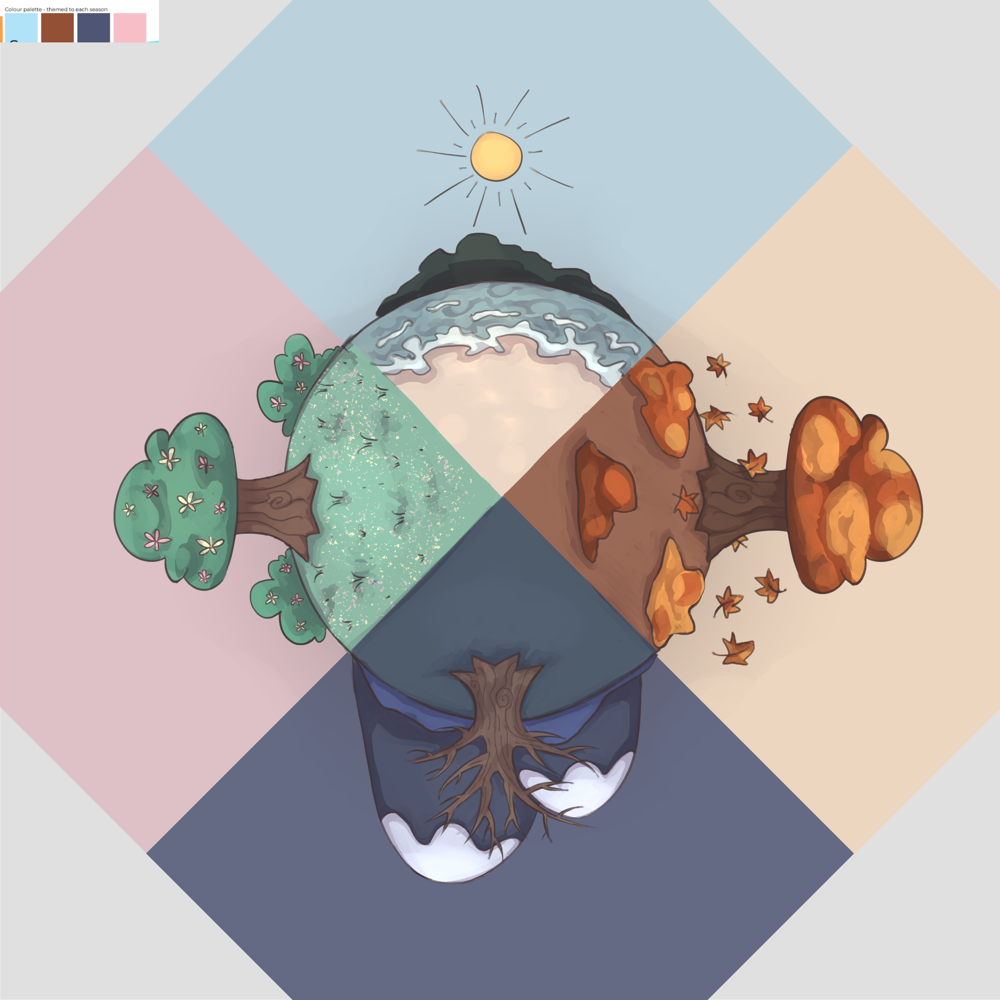
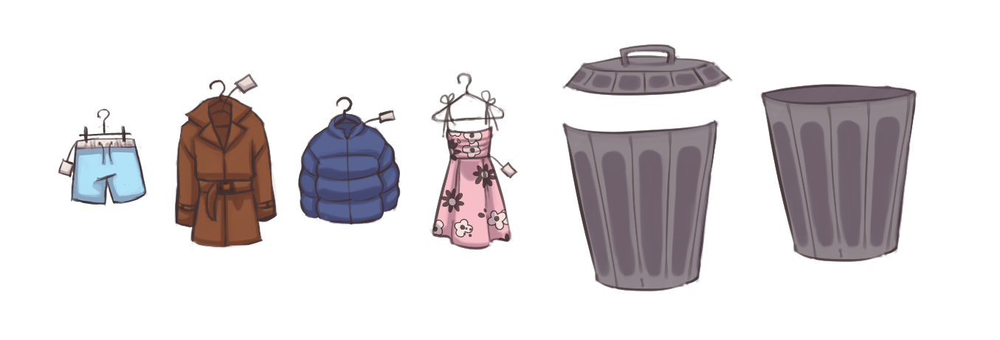
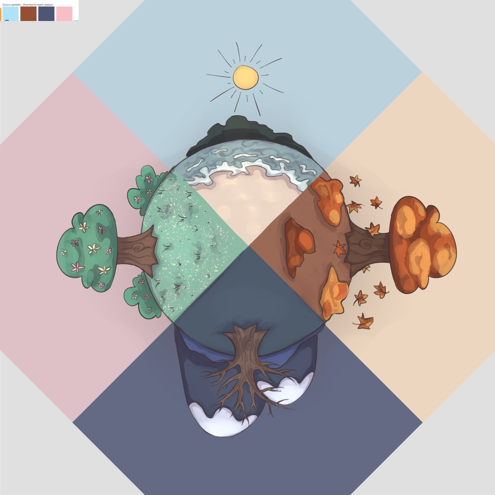
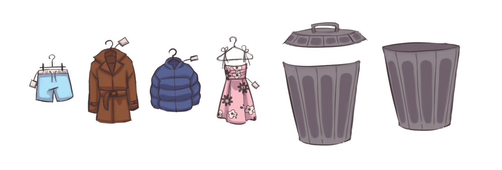
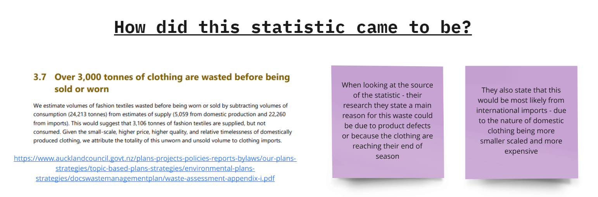
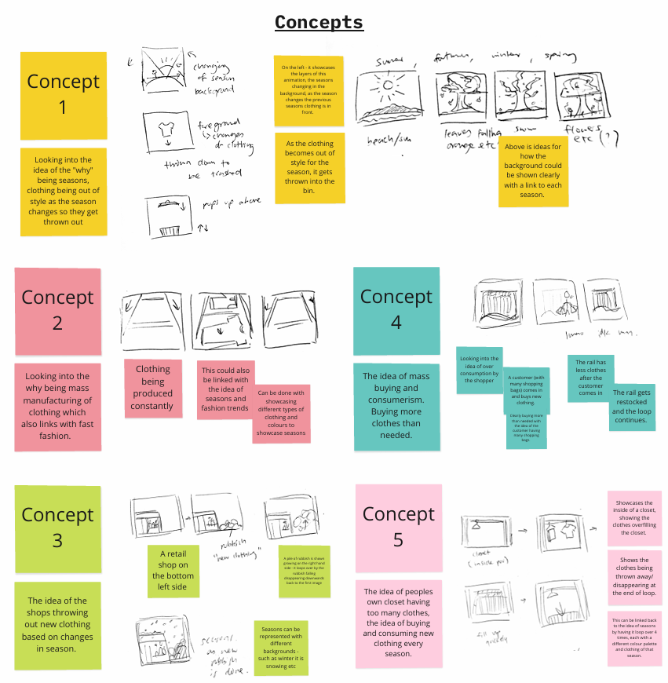

Assignment 2: Looped States
DESIGN 240 @ UOA
Using the same statstic from Assignment 1 of 3,106 tonnes of clothing are wasted before being sold or worn. We are looking into the reasons behind "why" this statstic is the reason it is. How it went so poorly in the first place. With the outcome being a looped gif to showcase the idea in an abstract manner, playing aorund with the use of images and creating my own digital assets.
Type: Code + Design
Programs: Miro, Processing, Java, and Clip Studio pro.
Skills: Design thinking, Documentation of design process, Java Code + Programming, Digital illustation and Sketching.
Date: May 2024
Supervised by Steffan Hooper in DESIGN 240: Designing with Data @ UOA
 



Process
I started off this project by looking into the statstic of "3,106 tonnes of clothing are wasted before being sold or worn." and the reason behind why it exists.
From these reasons I had started to create concepts in which I had asked my peers for feedback on which were the best to represent my "why" on the statstic.
I had then started on creating a GIF to then represent the behind the reason to why this statstic exists. I had documented this process within miro which can be looked at below.
Final Output
Artist intent
When expanding on the idea of what were the reasons and the "why" behind my chosen statistic, "3,106 tonnes of clothing are wasted before being sold or worn.", I found that one of the main reasons was changes within a season, retail stores would throw away clothing that doesn't fit the season as customers wouldn't buy them anymore.
From this, I then created my looping gif with the idea of showcasing how clothing would get thrown out as it passes its season and becomes "out-of-date". I showcased this idea with a rotating background with illustrations of each of the seasons; in the foreground, I looked into specific clothing pieces that are linked with each season and showed them coming up to the centre before getting thrown into the bin once the background had turned to the next season. This then becomes a looping cycle of throwing out clothes from stores once they hit past their season.
I also wanted to confirm the themes of each season and make sure each season had a colour palette to help make each season with its specific clothing be with each other. Seasons also often have colours associated with them, helping aid in visual clarity.
Reflection
From this assignment I had felt like I learnt some new things with processing, learning how to implement PImage and playing around with the transparent / tint() function.
Looking back on this assignment I do feel like I didn't get enough time to fully do iterations and flesh out the final output due to other courses and self time management, which I would lie to get better at. My main issue was exporting the file, due it to being too large for both Miro and discord and trying to find ways to compress it without damaging its quality was hard and somewhat upsetting that the final output on Miro doesn't fit the final GIF output I had gotten on processing.
Overall this assignment was enjoyable and fun, despite the issues I had to deal with.
Miro board link: https://miro.com/app/board/uXjVNmcjx3A=/?share_link_id=596633213485